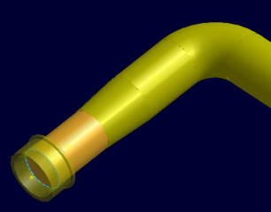
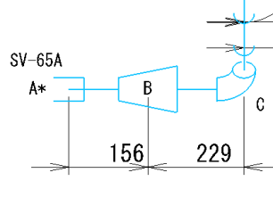
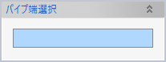
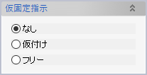
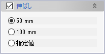

パイプ要素（直管）に、仮付けあるいは伸ばし長さ（調整代）の指定といった現合管属性を付加し、配管一品図に出力できるようにします。
 上の例では、スリーブのついているパイプ端に仮付けを指定したため、一品図ではスリーブの位置を表すAという記号に、仮付けを表す「＊（アスタリスク）」が付加されています。
要素検索コマンドを利用して現合管属性を付加ずみのパイプ要素を検索できます。
パイプ要素のいずれかの一端を選択し、継手の固定方法や伸ばし長さを指定してOKをクリックします。すでに現合管属性を付加したパイプ端を選択すると、付加ずみの属性が表示されます。また、配管一品確認コマンドを利用すると伸ばし長さをプレビュー表示できます。

属性を付加したいパイプ（直管）の端部を1箇所選択します。

継手の仮固定方法を選択します。一品図ではそれぞれ「仮付け：*（アスタリスク）」「フリー：#（シャープ）」の記号で表示されます。

伸ばし長さを選択します。